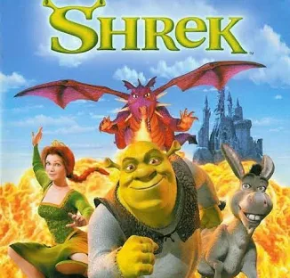

Shrek (2001)
Um ogro, um burro falante e uma princesa nada comum.
- Direção: Andrew Adamson e Vicky Jenson
- Estúdio: DreamWorks Animation
- Lançamento: 2001
- Duração: 90 minutos
- Gênero: Animação, Comédia, Aventura
- Baseado em: livro de William Steig

Um ogro, um burro falante e uma princesa nada comum.
Shrek é um ogro mal-humorado que vive sozinho e feliz no seu pântano. Sua paz acaba quando o ambicioso Lorde Farquaad expulsa todas as criaturas de contos de fadas do reino e elas vão parar justamente na casa dele.
Para recuperar seu pântano, Shrek faz um acordo com Farquaad: resgatar a Princesa Fiona, presa em um castelo guardado por uma dragão. Acompanhado pelo Burro, um falador que não sai do seu pé, o ogro parte numa aventura que vai mudar a forma como ele enxerga o mundo e a si mesmo.
Shrek
Burro
Princesa Fiona
Lorde Farquaad
Foi o primeiro filme a vencer o Oscar de Melhor Animação, categoria criada em 2002.
No Brasil, a voz do Shrek foi feita pelo humorista Bussunda, do Casseta & Planeta.
O sucesso gerou continuações, especiais de TV e os filmes derivados do Gato de Botas.